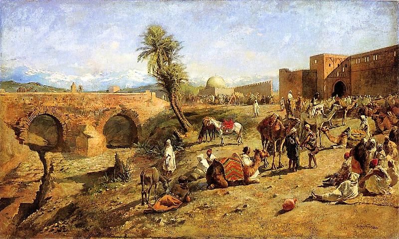

Az arab nép
Az Arábiát lakó arabok zöme ló- és tevetenyésztő nomád beduin volt. Törzseik a száraz, sivatagos területeken egymás ellen harcoltak az életet adó vízért, az oázisok legelőiért, az állatállományért. Az arabok egy része kereskedéssel foglalkozott, ők bonyolították le a Jemen és Palesztina közötti forgalmat, és bekapcsolódtak a nagy közel-keleti közvetítő kereskedelembe.
